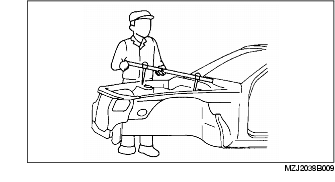
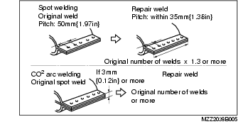
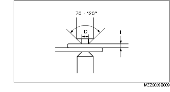
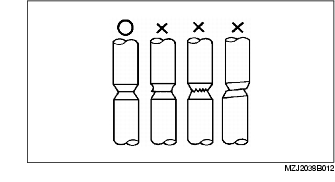
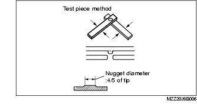
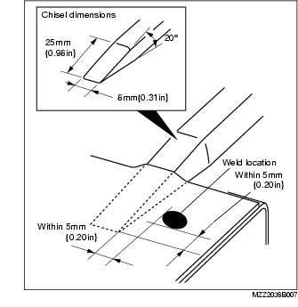
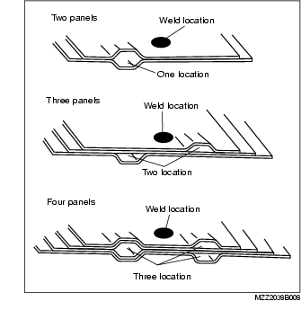

Efficient installation of body panels
Checking Preweld Measurements And Watching
• Align to the standard reference dimensions, based upon the body dimensions illustration, so that new parts are installed in the correct position.

Welding Notes
• For the number of weld points, welding should be performed in accordance with the following reference standards.

Spot Welding Notes
• The shape of the spot welder tip is D=(2×t)+3. If the upper panel thickness is different from that of the under panel, adjust to the thinner one.

• Because the weld strength is affected by the shape of the spot welder tip, the optimum condition of the tip should always be maintained.

• Spot welds should be made at points other than the originally welded points.
• Before spot welding, make a trial weld using the same material as the body panel to check the weld strength.

Checking Weld Strength
• Installation locations of the engine, chassis, and seat belts are designated as important safety locations for weld strength. Check weld strength by driving a chisel between the panels at every fourth or fifth weld spot, and every tenth regular weld location.

• Drive the chisel between the panels according to the number of panels as shown below.

• To determine weld strength, drive the chisel between the panel and check whether the panels come apart. If the panels come apart, make another weld near the original weld.
• Restore the shape of the checked area.